이 Idleon Research 가이드는 최적의 리서치 그리드 우선순위와 잠금 해제 가능한 모든 관찰 위치를 안내합니다. World 7의 이 스킬은 계정 전체에 강력한 보너스를 제공하고 새로운 메카닉을 잠금 해제하지만, 장기적인 리서치 경험치 획득 극대화와 균형을 맞춰야 합니다.
Research 기초
Research는 World 7 스킬로, 레벨을 올려 리서치 그리드 보너스를 잠금 해제합니다. 리서치 경험치는 과거 월드의 랜드마크를 무작위 수 생성 체크를 통해 관찰함으로써 획득합니다. 잠금 해제 후 리서치 그리드 내 세 가지 리서치 오브젝트 중 하나를 다양한 효과를 위해 사용할 수 있습니다. 처음에는 관찰 하나에 리서치 오브젝트를 1개만 배치할 수 있지만, 레벨 40에서 2개, 레벨 70에서 3개로 늘어납니다.
| 오브젝트 유형 | 효과 / 전략 | 획득 경로 |
|---|---|---|
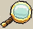 Magnifying Glass (확대경) |
관찰에 배치하면 리서치 경험치를 줍니다! 이것이 리서치 경험치 획득의 원천이며, 이득을 최대화하기 위해 현재 잠금 해제된 가장 높은 관찰에 배치합니다. | 3번째 미니헤드 깊이 챌린지 (Goldhead); 13번째 미니헤드 깊이 챌린지 (Maizehead); 리서치 레벨 10 (Posty Notes); 한정 이벤트 상점 |
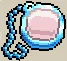 Optical Monocle (단안경) |
관찰에 배치하면 시간이 지남에 따라 해당 관찰에 통찰(Insight)이 쌓여 레벨업됩니다! 통찰 레벨은 결국 관찰의 기본 경험치를 높이고(N8), 전체 리서치 경험치 보너스를 제공합니다(O8). 확대경을 놓기 전에 가장 높은 레벨 관찰을 레벨 2 또는 3으로 올리는 데 사용하고, 그 후에는 사용하지 않는 관찰을 균등하게 올려 O8 리서치 업그레이드 버프를 받으세요. | L8 리서치 그리드 업그레이드 |
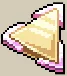 Kaleidoscope (만화경) |
관찰에 배치하면 인접한 렌즈들이 % 더 강력해집니다! 인접은 만화경이 목표 오브젝트의 위/아래 또는 왼쪽/오른쪽에 있어야 하며, 확대경과 단안경 모두에 적용됩니다. 항상 확대경을 만화경으로 강화하되, 통찰을 더 빠르게 올리는 데도 사용할 수 있습니다. | M9 리서치 그리드 업그레이드; 한정 이벤트 상점 |
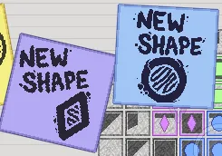
레벨 20부터 다양한 리서치 그리드 형태가 잠금 해제되어 그 아래의 모든 리서치 그리드 칸에 배수를 적용합니다. 이 형태들은 리서치 스킬 메뉴 왼쪽 하단의 '형태 조정' 아이콘으로 이동할 수 있습니다.
| 오브젝트 유형 | 배수 효과 | 최대 적용 범위 | 획득 경로 |
|---|---|---|---|
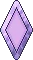 Purple Diamond (보라색 다이아몬드) |
1.25배 | 6칸 | 레벨 20 (Posty Notes) |
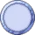 Blue Circle (파란색 원) |
1.15배 | 9칸 | 아래 참조 |
| Green Square (초록색 정사각형) | 1.5배 | 4칸 | 아래 참조 |
| Cyan Hexagon (청록색 육각형) | 1.2배 | 9칸 | 아래 참조 |
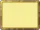 Golden Rectangle (황금색 직사각형) |
1.2배 | 20칸 | 아래 참조 |
| Orange Star (오렌지색 별) | 1.35배 | 7칸 | 아래 참조 |
레벨 20 이후 새로운 리서치 형태들이 위 순서(Square → Hexagon → Rectangle 등)로 다음 출처에서 잠금 해제됩니다:
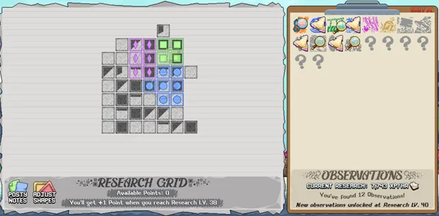
- 스펠렁킹의 Glitter End 보스
- Neon Scale Pet
- 한정 이벤트 상점
- Posty Note 레벨 (30/50/80/110)
리서치 진행 가이드 (우선순위 / 티어 리스트)
아래 리서치 그리드 티어 리스트는 다른 게임 메카닉을 잠금 해제하기 전에 초기 리서치 경험치 획득을 최적화합니다. Idleon을 자주 열어두지 않는다면 리서치 경험치가 게임이 열려있지 않을 때 크게 감소하므로 초기에 L7 (AFK Research)에 2포인트 투자를 권장합니다.
- K7 (2포인트) — 초기 리서치 경험치.
- J6 (1포인트) — Boomy Mine 맵에서 미니헤드를 잠금 해제하며, 세 번째 챌린지로 추가 리서치 확대경을 줍니다.
- K8 (1포인트) — K9 잠금 해제를 위해.
- K9 (4포인트) — 강력한 리서치 경험치 배수.
- J8 (1포인트) — 작은 코그(Tiny Cogs)를 잠금 해제합니다. 이는 Dancing Coral NPC에서 네온 산호를 교환한 후 기본 리서치 경험치를 위한 클로버 신전 레벨 올리기에 매우 중요합니다.
- K10 (1포인트) — 10레벨마다 추가 리서치 포인트를 제공하고 L11을 향한 진행을 돕습니다.
- L10 (1포인트) — 관찰 잠금 해제 확률을 소폭 높이지만 주로 L11 잠금 해제를 위해.
- L11 (1포인트) — 새로운 관찰 잠금 해제를 위한 구제 메카닉 제공.
- M10 (1포인트) — 만화경은 다른 오브젝트에 강력한 배수를 줍니다. 이 포인트는 M9에 도달하는 데 필요하며 나중에 최대로 올립니다.
- M9 (4포인트) — 만화경을 잠금 해제해 다른 오브젝트를 강화합니다. 유용한 위치에 배치할 수 있는 만화경 수(관찰 잠금 해제 운에 따라 다름)에 따라 레벨을 올리되 결국에는 최대로 올리세요.
- M10 (2포인트) — 이제 만화경이 잠금 해제되었으므로 그 효과를 더욱 강화합니다.
- J5/J4/J3 (각 1포인트) — Glimbo 거래 메카닉을 잠금 해제하지만 주로 Jellofish Fields에서 스시 스테이션(Sushi Station)을 잠금 해제하는 J3를 위해 구매합니다(해당 맵에 아직 도달하지 않았다면 구매를 미루세요). 초기 스시 스테이션 업그레이드에는 2배 리서치 경험치, 추가 관찰 롤, 리서치 AFK 수익, 확대경이 포함되어 쉽게 잠금 해제할 수 있으며 시간 기반 메카닉도 시작됩니다.
- L8 (2포인트) — 단안경 2개를 잠금 해제해 장기적으로 리서치 경험치를 강화합니다.
- M8 (1포인트) — 단안경 속도를 향상시키지만 주로 강력한 통찰 리서치 업그레이드인 N8/O8을 잠금 해제하기 위해.
- N8 (3포인트) — 확대경을 놓기 전에 통찰 레벨을 2~3으로 올린 가장 강력한 관찰들에 배수를 적용합니다. Idleon 리서치 최적화 도구(Idleon Research Optimizer)는 최적의 통찰 레벨 순서를 확인하려는 최적화 플레이어에게 매우 유용합니다.
- O8 (4포인트) — 획득하는 모든 통찰 레벨에서 장기적인 리서치 경험치 스케일링을 제공합니다.
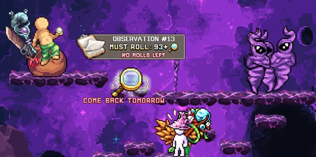
위의 최적 리서치 업그레이드들이 리서치 형태에도 우선순위입니다. 이 기반 이후에는 계정 선호도와 진행 상황에 따라 아래 추천 경로들을 대략적인 추천 순서로 고려하세요(모든 리서치 노드는 위키에 나열되어 있습니다).
Arctis 경로
World 5 Divinity를 위한 Doot 펫이 없다면 N4가 모든 캐릭터에 Arctis를 활성화합니다. Doot 소유자에게는 작은 리서치 노드 배수와 20% 드롭률을 제공하므로 낮은 우선순위입니다. 추천 경로는 이 리서치 노드를 향해 J5/K5/L5/L4/M4입니다.
일일 부스트 경로
K5/L5는 마스터클래스 비용 절감과 스펠렁킹을 위한 일일 메카닉이 있어 이 메카닉들을 마무리하는 데 1포인트 투자만으로도 가치 있는 누적이 시작됩니다. Glimbo와 코인 배수를 잠금 해제하므로 J5를 먼저 구매해 이 옵션들을 열어두세요.
추가 게임 메카닉 경로
새로운 세일링(G7), 게이밍(H8), 이퀴녹스(G8), 파밍 메카닉(I8), 시길 업그레이드(I6)를 잠금 해제하지만, 이 메카닉들의 혜택은 이미 이 스킬들에서 고급 진행이 필요합니다. 본인 계정 진행 상황을 고려하되, 제공하는 파워를 기반으로 한 추천 순서는 세일링, 게이밍, 이퀴녹스, 파밍, 시길 업그레이드 순입니다. 일부는 추가 부스트를 위해 메인 잠금 해제 주변의 그리드 노드도 고려하세요.
Legend Talents 경로
K6/L6/M6/M5는 특정 World 7 Legend Talents의 최대 레벨을 높입니다. 각 옵션은 다음과 같습니다: (K6) Yellow VI-X, (L6) Red II-IV & VI-VII, (M6) Brown I-III & IX-X, (M5) Green I-IV & VIII. 옐로우가 가장 강력한 옵션으로 권장되며 나머지는 계정 선호도에 따라 선택하세요.
버튼 경로 (Button Path)
World 7 깊숙이 있는 Mantaray 맵의 버튼은 리서치 경험치, 미니헤드 화폐, 스시 벅스, 스펠렁킹 POW 등 유용한 배수 보너스가 있습니다. 맵에 도달해야 하고 계정 진행 상황을 테스트해야 하므로 G6/F6의 가치는 계정마다 다릅니다. 어려운 챌린지를 서서히 건너뛰기 위해 G6에 최소 1포인트 투자를 고려하고, 이후 F6는 선호도에 따라 추가하세요.
미니헤드 경로
J6/I5/H5/G5/G4로 미니헤드 메카닉을 빠르게 진행해 보너스를 더 일찍 잠금 해제할 수 있습니다. J6 최대화는 이 기본 비율이 미니헤드 업그레이드와 아톰 콜라이더 보너스로 배수가 적용될 수 있으므로 특히 강력합니다. 미니헤드에는 강력한 보너스가 있지만 대부분 초기 진행에 집중되어 있습니다.
스시 스테이션 경로
J3/I3로 스시 수익을 높여 계정 보너스에 더 빨리 도달할 수 있습니다. 이 업그레이드들은 스시를 완료하는 데 필수는 아니지만, 이미 언급했듯이 메카닉을 잠금 해제하는 데 J3에 최소 1포인트가 필요하므로 획득할 가치가 있습니다.
관찰 위치 (Observation Locations)
관찰들은 리서치 스킬 메뉴에서 왼쪽부터 오른쪽으로 레벨 순으로 나열되어 있습니다:
| 관찰 번호 | 위치 (월드) — 적 |
|---|---|
| #1 | Valley of the Beans (World 1) — Bored Bean |
| #2 | Shimmerfin Grove (World 7 Town) — 없음 |
| #3 | Jar Bridge (World 2) — Sandy Pot |
| #4 | Vegetable Patch (World 1) — Carrotman |
| #5 | Refraction Bend (World 7) — Equinox Broadbass |
| #6 | Encroaching Forest Villas (World 1) — Wode Board |
| #7 | Winding Willows (World 1) — Baby Boa |
| #8 | Pincer Plateau (World 2) — Pincermin |
| #9 | Doodle Reef (World 7) — Doodlefish |
| #10 | The Oasis (Poppy the Kangaroo Mouse) (World 2) |
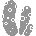 #11 | Barnacle Curb (World 7) — Shellslug |
| #12 | Seaweed Street (World 7) — Seaweed Street |
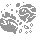 #13 | Outskirts of Fallstar Isle (World 4) — Demon Genie |
| #14 | King Doot Boss Room (World 2) — King Doot |
| #15 | Balloon Bay (World 7) — Balloonfish |
| #16 | Deepwater Docks (World 2) — 없음 |
| #17 | Puffpuff Overpass (World 7) — Pufferblob |
| #18 | World 2 Dungeon Entrance |
| #19 | Plastic Basin (World 7) — Litterfish |
| #20 | Djounnuttown (World 2) — Snelbie |
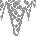 #21 | World 3 Dungeon Entrance |
| #22 | Sands of Time (World 2) — Sand Giant |
| #23 | Jelly Cube Bridge (World 4) — Gelatinous Cuboid |
| #24 | Hollowed Trunk (World 1) — Nutto |
| #25 | Slip Slidy Ledges (World 1) — Starfire/Dreadlo Ore |
| #26 | Standstill Plains (World 4) — Biggole Wurm |
| #27 | Coralcave Outskirts (World 7) — Coralcave Crab |
| #28 | Enclave of Eyes (World 4) — Stilted Seeker |
| #29 | Deep End of the Koipond (World 7) — Trench Fish |
| #30 | Jungle Perimeter (World 1) — Slime |